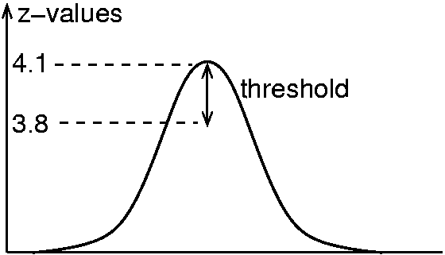

Example:
vzmax -in tcgbsAC1T.v -pos 3.1 -neg -3.1 -out BtcgbsAC1T.v -radius 5 -minsize 81
-report AC1T_list.txt -system talairach -threshold 0.3
The output image 'BtcgbsAC1T.v' marks the locations of the local maxima.
The list of local activation maxima is contained in the text file 'AC1T_list.txt'.
A pixel is considered a local maximum, if its value is above the given threshold (-pos or -neg),
and if it is the largest value within the specified radius.
Only activation areas of size larger than '-minsize' are considered,
'-minsize' is given in units of mm^3. For
example, if the spatial resolution is 3x3x3mm, then a minsize of
81 corresponds to three voxels (81 = 3 x 27 = 3 x (3x3x3)).
The parameter '-threshold' facilitates the inclusion of adjacent voxels into the
output image, provided they do not differ by more than the specified
amount from the local maximum. In the example, '-threshold' is set to 0.3. If a local
maximum has a value of 4.1, then adjacent voxels with values above 3.8 are included
in the output file:

The parameter '-system' determines the coordinate-system that will be printed in the list. Possible values are:
- mm: coordinates are given in millimeter (origin is at the top left border of the image),
- voxel: coordinates are given as voxels (origin is at the top left border of the i mage),
- talairach: the coordinate system corresponds to that of the Talairach/Tournoux At las, i.e. the x-axis passes through the upper border of CA and the lower border of CP.